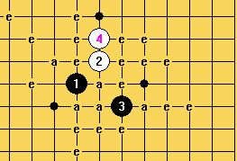

2009年RIF会员大会内容（中文版）
#1 2009年RIF会员大会内容（中文版）作者：无尽 发表时间：2009-9-15 20:27:20
第11届世界连珠锦标赛期间，国际连珠联盟于8月10日在比赛地捷克巴尔杜比采举行全体会员大会。会议决议如下：
1. RIF会长彼得·琼森宣布会员大会开幕。
2. 彼得·琼森当选会员大会主席。
3. 斯蒂芬·卡尔森当选会员大会秘书。
4. 选举三位提案核检员：阿列斯·鲁伯卡、娜塔丽亚·尼科诺娃和 冈部宽。
5. 选举三位计票监票人，如果有必要。上述几人当选。
6. 通过议程。在第18项中增加几点：
a) 国际组织体育大会
b) 《五子棋/连珠》一书的印刷
c) 书籍印刷最低数量的可能性
d) 下届世锦赛五目决赛
e) 签署银行帐户
7. 点名。
- 日本： 冈部宽
- 俄罗斯： 康斯坦汀·尼科诺夫
- 爱沙尼亚： 安茨·索索夫
- 中华台北： 林皇宇
- 捷克共和国：阿列斯·鲁伯卡
- 瑞典： 彼得·琼森
8. 接纳新会员，如果有。新会员即刻有资格在本届会员大会上投票。波兰联盟已提交入会申请。
接纳波兰联盟为RIF会员。
增加点名：波兰 - 彼得·马洛维斯基
9. RIF主席、财务、审计作报告。
彼得·琼森提到近两年的主要活动点，特别是2009-2011年期间的世界锦标赛新开局规则，及重新加入五目作为竞赛项目。
斯蒂芬·卡尔森通报财务状况，见附件。阿列斯关于网络信息成本的问题，是否可以降低。问题交给网络委员会。
在会上宣读了布约恩·沃尔格任的审计报告。
10. 审批中央委员会上两年度的工作。
会议通过了此项工作。
11. 预算及会费。
斯蒂芬·卡尔森介绍了预算建议。阿列斯增加了销售的意见，比如T恤。预算通过。
12. 选举中央委员会
会长： 彼得·琼森
/*760*90，创建于2012-2-9*/ var cpro_id = 'u761865';
#2 Re:2009年RIF会员大会内容（中文版）作者：无尽 发表时间：2009-9-15 20:28:55
a) 彼得·琼森通报关于国际体育大会会员资格问题。加入费用是CHF4000。彼得·琼森将继续联系申请的处理等情况。
国际体育大会 即 国际单项体育联合会 今年改名了～ 期待ing……
［ 失落刀 于 2009-9-15 20:31:43 时花20金币送鲜花一朵］
#3 Re:2009年RIF会员大会内容（中文版）作者：失落刀 发表时间：2009-9-15 20:35:18
坂田规则=？
无尽麻烦找下权威规则中文说明，如果有英语版本也好。
#4 Re:2009年RIF会员大会内容（中文版）作者：无尽 发表时间：2009-9-15 20:38:34
坂田de日文假名发音即Sakata
#5 Re:2009年RIF会员大会内容（中文版）作者：失落刀 发表时间：2009-9-15 20:47:30
- 坂田规则（Sakata规则）：
- 第一位棋手下前三手棋（RIF标准规则规定的26种开局之一）。
- 第二位棋手下第4和第5手棋（黑白各一）。
- 第一位棋手选择棋子颜色（是否交换）。
- 按RIF标准规则继续（黑棋有禁手）。
#6 Re:2009年RIF会员大会内容（中文版）作者：江南新绿 发表时间：2009-9-15 20:52:50
sakata规则不会被证实的，因为未知局部比山口要多。山口还没有弄清楚，玩sakata无疑更混乱。如果未知的太多，像在玩牌，而不是玩棋。为了说明我举一个例子吧。世锦赛上的水月开局。
=======上图对应的爱五子棋谱代码如下，以便你拆解：========
h8i9j7i10i11
======================================================
大家研究一下就知道，走多少打才能走成这个样子。
#7 Re:2009年RIF会员大会内容（中文版）作者：失落刀 发表时间：2009-9-15 20:53:20
山口规则（Yamaguchi规则）：
1、第一位棋手下前三手棋（RIF标准规则规定的26种开局之一），同时提议五手打点的数目；
2、第二位棋手决定是交换还是保持执白；
3、下第5手时，黑方必须提供第一位棋手在开局时所提议的数目的五手打点；
4、白方从中选择一点，并下第6手棋；
5、按RIF标准规则继续（黑棋有禁手）。
#8 Re:2009年RIF会员大会内容（中文版）作者：失落刀 发表时间：2009-9-15 21:28:34

发哥的水月。
#9 Re:2009年RIF会员大会内容（中文版）作者：dyccj 发表时间：2009-9-15 21:29:06
顶，我们一定要搞清楚再下，比如围棋，看来围棋一定是终结了。#10 Re:2009年RIF会员大会内容（中文版）作者：失落刀 发表时间：2009-9-15 21:33:30
召唤哪位规则研究达人发个RIF、山口、坂田规则各项参数比较技术贴呀。
在下赠送威望和金币，以示感激！
#11 Re:2009年RIF会员大会内容（中文版）作者：没事摆石子玩 发表时间：2009-9-15 22:01:12
大师又发高论了,按照你的理解.规则不用改了,RIF最好 什么你都知道,那才是好象在打牌吧 一副牌有几个司令, 2王,老A^^^^^^
什么你都知道,那才是好象在打牌吧 一副牌有几个司令, 2王,老A^^^^^^
#12 Re:Re:2009年RIF会员大会内容（中文版）作者：江南新绿 发表时间：2009-9-15 22:30:02
引用：
原文由 没事摆石子玩 发表于 2009-9-15 22:01:12 :
大师又发高论了,按照你的理解.规则不用改了,RIF最好真理不以个人意志为转移，这个从小老师就教吧。你等着看好了。山口也许会通过，sakata就未必了。下棋和打牌最大的不同在于信息量的。打牌的信息不对称是天生的。而下棋的信息不对称是人为控制的。努力学的多一些胜算就大一些。现在如果改成sakata，那么两个棋手有可能都不知道，那就和打牌一样了。
#13 Re:Re:2009年RIF会员大会内容（中文版）作者：江南新绿 发表时间：2009-9-15 22:37:03
引用：让你黑棋贴目10目，你觉得在目前的技术条件下，成熟吗？
原文由 dyccj 发表于 2009-9-15 21:29:06 :
顶，我们一定要搞清楚再下，比如围棋，看来围棋一定是终结了。
#14 Re:2009年RIF会员大会内容（中文版）作者：江南新绿 发表时间：2009-9-17 20:28:05
山口与rif的区别。山口时五手n打，而rif是五手两打。由于n可以动态变化，所以可以把白4并不是最强的开局给与复活，没有区别的是游星、慧星依然不能下。几大平衡局似乎也没有更多的可下变化。如果你熟悉原先的平衡变化，那么也可以拿出来下，不过鉴于参加比赛的第一方阵都是老面孔了，所以用老变化似乎也骗不了人。所以通常情况下除非彼此对新开局都不熟悉，否则一定会开新变化的。在新变化中像某些白4很强，比如山月，不是黑大优，就是白大优，似乎也是不能下了。但总的来说山口比rif可下的变化多多了。
山口于sakata的区别,如果你深入研究山口，那么对于熟悉sakata也是非常有帮助的。因为山口下的东西完全可以照搬到sakata下来用。尤其是你拆的山口下的平衡变化。那么sakata比山口多什么东西呢？多的是某些弱4后面的5，举个例子：我们说山口规则下，山月布局不能下了。因为你找到最强白4之后，这个布局不是黑优就是白优，但到了sakata下面，可以不用直接下最强4了，导致了一些其他的变化。所以我们说如果山口规则找不到强4，那么sakata与山口就是等同。
复杂程度：sakata>山口>rif
最后我举一个例子，今天小敏约我orc下sakata，他水月开局。
=======上图对应的爱五子棋谱代码如下，以便你拆解：========
h8i9j7i10k8
======================================================
我4，5如图。他开局没有研究，一不留意就走入了圈套。
=======上图对应的爱五子棋谱代码如下，以便你拆解：========
h8i9j7i10k8h9g9i7i8
======================================================
他走了这个必败的9，其实上下都可以。如果我们早知道山口下水月6打之前有其他强4，我就不会去研究这个变化了。就掩盖了sakata。但如果我不清楚山口下哪个白4最强，所有的白4，黑5都研究下，那么山口与sakata等同。
=======上图对应的爱五子棋谱代码如下，以便你拆解：========
h8i9j7i10k8h9g9i7i8j8g8h10g11g10j10h11h13i12
======================================================
余下的变化很简单了。完
［ 失落刀 于 2009-9-17 20:44:20 时奖励此帖[金币加 20 威望加1］
［ 失落刀 于 2009-9-17 20:44:38 时花20金币送鲜花一朵］
#15 Re:2009年RIF会员大会内容（中文版）作者：失落刀 发表时间：2009-9-17 21:13:52
sakata对对局双方的“动态平衡”时间过长，因此难以接受是不是这个意思呀，发哥？
你上面的分析，我觉得还是sakata规则好，有厚度，更适合竞技的。这个动态平衡的时间不会很长的，如果职业化的话。
#16 Re:2009年RIF会员大会内容（中文版）作者：江南新绿 发表时间：2009-9-17 21:32:31
这次世锦赛假先和假后的胜率之比不知道是多少。花影不知道能否提供。如果sakata规则下假先，假后差的比较多。远远超过历史上两人实际水平就能够判断规则失败。不过目前我们的数据还不太了然。
［ 失落刀 于 2009-9-17 21:38:27 时花20金币送鲜花一朵］
#17 Re:2009年RIF会员大会内容（中文版）作者：南京小飞机 发表时间：2009-9-17 22:00:34
杨大师，我想gan你！！
［ 失落刀 于 2009-9-17 22:06:32 时惩罚此帖，发帖者[金币减20 威望减1］
#18 Re:2009年RIF会员大会内容（中文版）作者：南京小飞机 发表时间：2009-9-17 22:16:46
杨大师，我想gan你！！［ 失落刀 于 2009-9-17 22:30:15 时奖励此帖[金币加 20 威望加1］
#19 Re:2009年RIF会员大会内容（中文版）作者：失落刀 发表时间：2009-9-17 22:32:41
哎，刚才手抖了两下。
#20 Re:2009年RIF会员大会内容（中文版）作者：dyccj 发表时间：2009-9-19 9:45:58
五子棋之所以很难有更大在发展，棋手总想着对自己有利，不去拓展对棋本身更有利的规则是主要的原因之一。干脆都不用下了，都花钱买点谱背背打比赛得了。你背得好，你也能拿世界冠军。#21 Re:2009年RIF会员大会内容（中文版）作者：dyccj 发表时间：2009-9-19 9:47:50
最后说一句，靠计算下棋是乐趣的事，靠背谱下棋拿冠军是可耻的。#22 Re:2009年RIF会员大会内容（中文版）作者：王志伟123 发表时间：2009-9-19 12:55:33
楼上说的不对被谱就能拿冠军了？你被下谱，拿个冠军试试！你要能被谱被出冠军我给你十万！#23 Re:2009年RIF会员大会内容（中文版）作者：dyccj 发表时间：2009-9-19 13:00:40
和软件棋手争论这个非常愚昧，是我不对，不提这事儿了。#24 Re:2009年RIF会员大会内容（中文版）作者：王志伟123 发表时间：2009-9-19 13:21:12
大哥，大哥你错了，我是耐心学棋的，不是什么软件棋手！我用棋盘摆过单击石，无手两打。倒是我只是从里面能学到一些下棋的道理！我笨吧我可被不下来谱，被下来的，地二天就忘了，要是从棋的理解上懂他为什么这么下，我才能记住！［ yoda 于 2009-9-22 14:41:06 时花20金币送鲜花一朵］
#25 Re:2009年RIF会员大会内容（中文版）作者：励精 发表时间：2009-9-22 13:03:27
坂田规则即Sakata规则，山口规则即Yamaguchi规则，塔拉尼科夫规则即Taranikov规则，塔拉-山口规则即Taraguch规则，详见以下两篇拙作：
http://www.ljrenju.com.cn/rule/rulesuggest.htm
http://www.ljrenju.com.cn/rule/fazhan2gaige.htm
［ 失落刀 于 2009-9-22 17:39:55 时奖励此帖[金币加 20 威望加1］感谢老师的大会翻译文章。
#26 Re:2009年RIF会员大会内容（中文版）作者：失落刀 发表时间：2009-9-22 17:47:18
励精老师不知道对规则有无专业性的研究？
能否请你写一篇纯技术性文章，比较论述下RIF、山口、坂田规则。以飨读者。